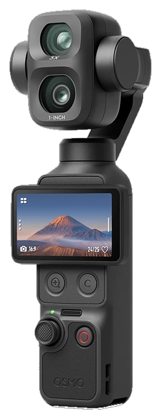
Osmo Pocket 4P
Dual-lens pocket gimbal. The only camera tested so far.
WorkingTested on Pocket 4P. Pocket 4 and Pocket 3 are untested. Action 6, Nano, and the rest are planned.
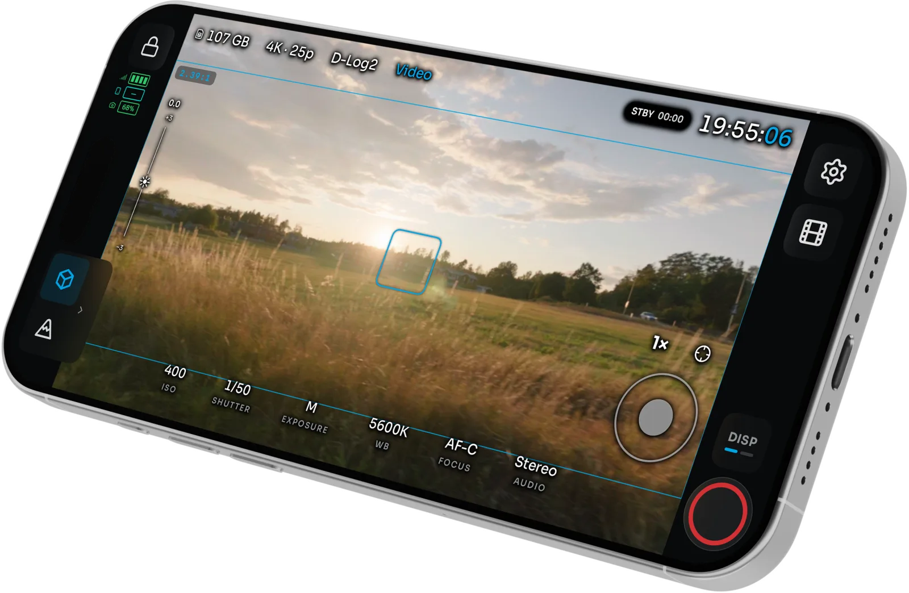
Waveform, vectorscope, histogram, RGB parade, false color, zebras, focus peaking, Traffic Lights, frame guides, and your own .cube LUTs. Drawn from the HEVC stream.
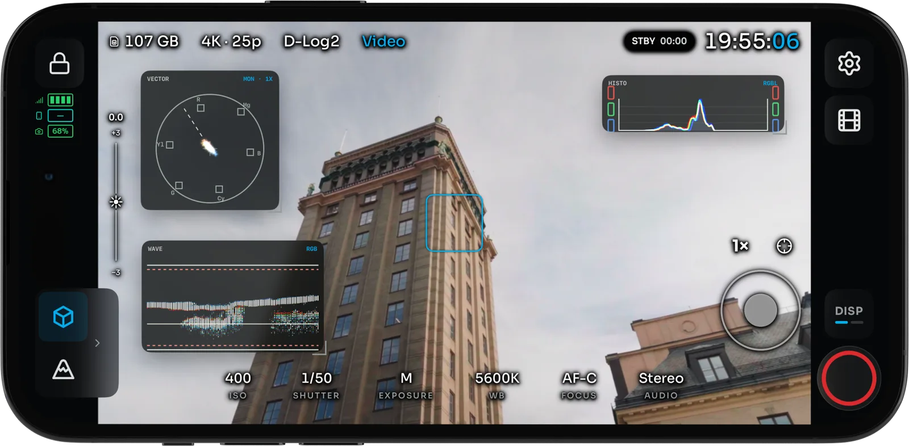
D-Log switches when you zoom. ISO, shutter, white balance, and mode are on screen. Bluetooth plus the camera’s Wi-Fi. Record on the body until remote roll is proven.
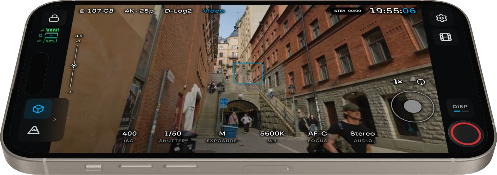
Faces are boxed on the live feed. Tap one to lock the Osmo subject tracker.
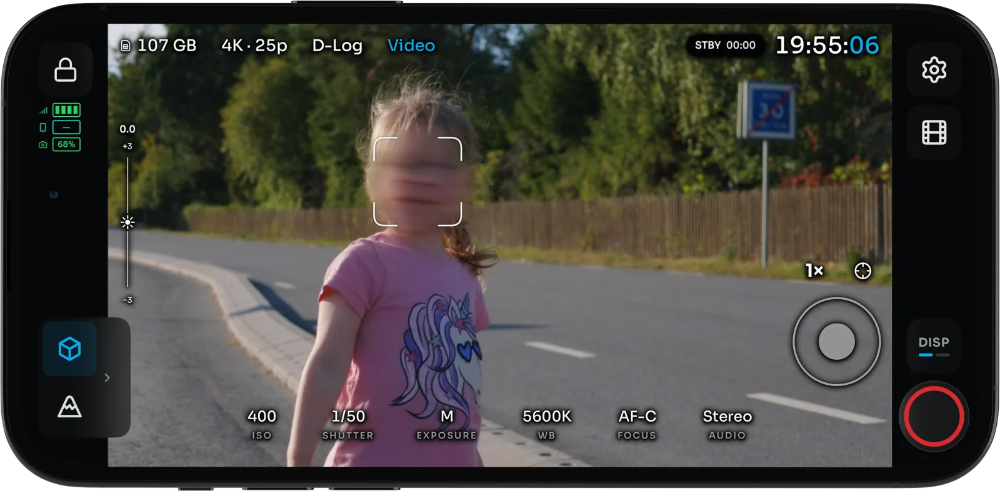
Zebras, peaking, false color, waveform, Traffic Lights, guides, and grid stay available when the phone is vertical.
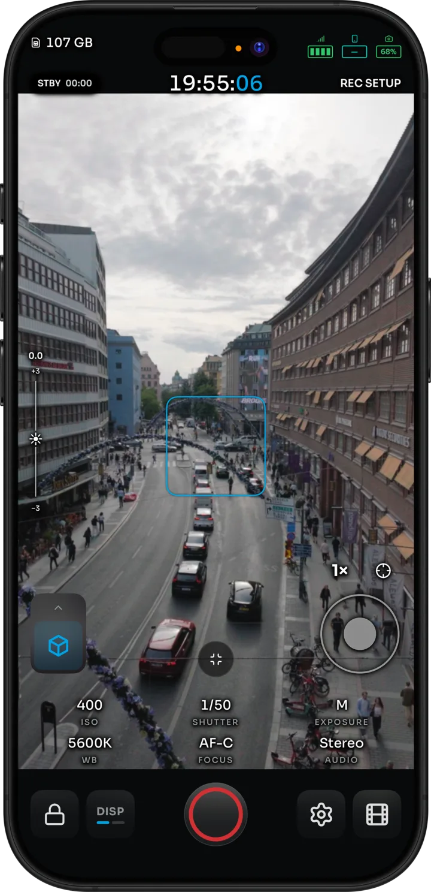
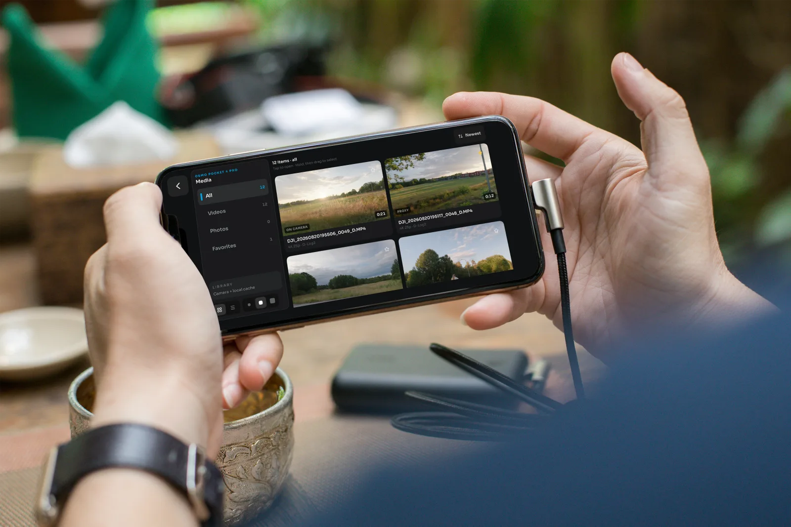
Browse clips and stills on the camera. Star the keepers and delete the rest while you still remember the shot.
No subscriptions, no paywalls, no telemetry. OpenPocketCine is Apache-2.0 licensed and built in the open by a community of filmmakers and developers.
Pocket 4P is tested. Pocket 4 and Pocket 3 are untested. Action 6, Nano, and the rest are planned.

Dual-lens pocket gimbal. The only camera tested so far.
Working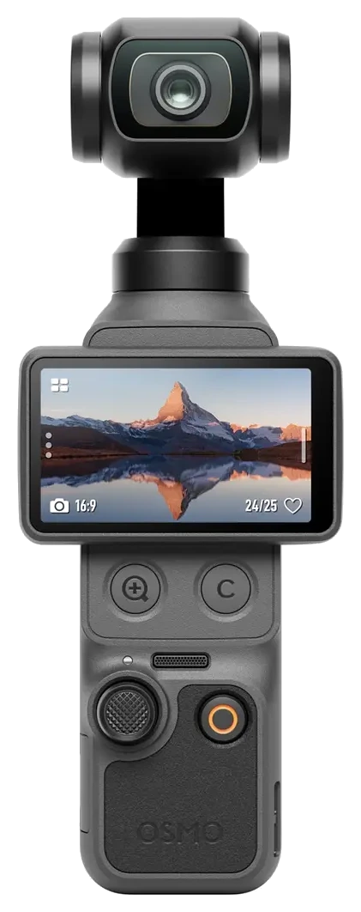
Same family, not yet run through OpenPocketCine.
Untested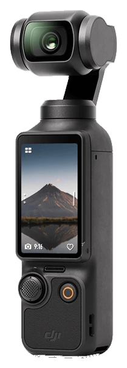
Previous-gen Pocket. Not tested on this app.
Untested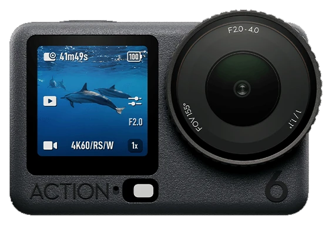
Action series support is still on the roadmap.
Planned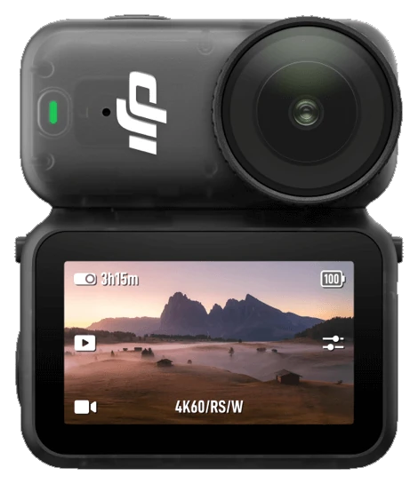
Wearable Nano. Planned with the rest of the series.
PlannedIssues and pull requests are welcome. iOS is on TestFlight. Android is a closed beta waitlist.